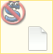

JonDo – First Steps Inhalt
JonDo – First Steps Inhalt  Preparing the
Browser Alternative
Browsers
Preparing the
Browser Alternative
Browsers JonDo – First Steps Inhalt Preparing the
Browser Alternative
Browsers
JonDoFox is a Firefox browser profile particularly optimised for anonymous surfing over JonDonym.
If not done yet, install Firefox on your system first. After that, you may install JonDoFox as follows:
Launch the JonDoFox installation program, choose "lite" oder "complete", and then follow the instructions.
unzip
profile.zip.firefox -P.Any "normal" Firefox configuration you may have previously created remains untouched thereby. After installation, you may choose between both configurations. When a new version of JonDoFox is released, you may always install the new version "over" the old one, that is into the same directory. You bookmarks will be kept.
The JonDoFox installation program is also suitable for a "portable" installation. If you choose the "for travelling" Installation, you may install JonDoFox on both a removable drive and on you hard drive. Any existing Firefox or JonDoFox installation on your computer remains untouched if you do not install JonDoFox to the same directory and update an existing installation thereby. While updating from earlier JonDoFox versions your bookmarks are kept. JonDoFox "portable" is compatible with the PortableApps menu for which a lot of other applications are available as well.
You get a "portable" version of JonDoFox for Mac OS X here (or, as an alternative, the lite version). You may start this version from both a removable drive and from your hard drive. For installation, please open the downloaded file with a double click. Then copy the included file on a data medium of your choice. You may start it from there with a simple double click.
The JonDoFox lite packet already contains all extensions which are relevant for your security with optimised settings. You will find some other useful extensions in the "complete packet which we have individually tested concerning their security and compatibility with JonDoFox. The Firefox statur bar always gives you control of the most important functions integrated in JonDoFox:

Using CS-Lite, you may very conveniently determine from which web sites you
accept Cookies and for which ones you block Cookies. If you click on the
CS-Lite Icon  with your left mouse button, you may give the
following approvals for the currently visited web site:
with your left mouse button, you may give the
following approvals for the currently visited web site:

Warnung: Die Funktion  Cookies global akzeptieren sollten Sie wenn möglich niemals
verwenden. Dadurch werden alle Cookies nicht explizit
blockierter Webseiten zugelassen und man kann Ihre Schritte im
Web verfolgen.
Cookies global akzeptieren sollten Sie wenn möglich niemals
verwenden. Dadurch werden alle Cookies nicht explizit
blockierter Webseiten zugelassen und man kann Ihre Schritte im
Web verfolgen.
AdblockPlus  arbeitet als Werbefilter im Hintergrund. Normalerweise müssen
Sie dessen Einstellungen nicht verändern, können aber jederzeit
eigene Filterlisten ergänzen.
arbeitet als Werbefilter im Hintergrund. Normalerweise müssen
Sie dessen Einstellungen nicht verändern, können aber jederzeit
eigene Filterlisten ergänzen.
NoScript gibt Ihnen eine komfortable Kontrolle darüber, welche der potentiell gefährlichen Scripte oder Plugin-Inhalte auf einer Webseite ausgeführt werden dürfen und welche nicht.
Kontrolle der installierten Plugins
Wenn Sie eine Webseite besuchen, die Plugin-Inhalte wie Flash-Movies oder
Java-Applets enthält, werden diese von NoScript grundsätzlich
blockiert. Anstelle des aktiven Inhalts erscheint ein NoScript-Platzhalter
(linkes Bild):
|  |  |
Sie können den jeweiligen Inhalt durch einen Klick auf den Platzhalter
oder über die Auswahl  Geblockte Objekte im
NoScript-Menü
freigeben.
Geblockte Objekte im
NoScript-Menü
freigeben.
Warnung: Ohne spezielle Schutzmaßnahmen kann über freigegebene Plugin-Inhalte Ihre Anonymität ganz oder teilweise aufgehoben und sogar Ihr System beschädigt werden.
Wenn Sie auf das NoScript-Icon in der Statusleiste
klicken, erhalten nun eine Auflistung der auf der besuchten Webseite
eingebundenen Adressen/Dienstanbieter, für welche Sie JavaScript zulassen
können. Die entsprechenden Einträge sind durch das Icon  gekennzeichnet:
gekennzeichnet:
 |
Durch ein Klick auf temporär erlauben bei
dem entsprechenden Listeneintrag aktivieren Sie die Skripte für diesen
Eintrag. Auf ähnliche Weise können Sie eine bereits erteilte
Berechtigung wieder entziehen, wie in der rechten Grafik veranschaulicht ist.
Wenn Sie allen Adressen die bereits erteilten temporären Berechtigungen
sofort entziehen wollen, können Sie dies, indem Sie auf den Eintrag
 Temporäre
Berechtigungen aufheben klicken.
Temporäre
Berechtigungen aufheben klicken.
Hinweis: Sie sollten eine solche Erlaubnis nur für den Namen der aktuell besuchten Webseite erteilen. Skripte von Drittanbietern werden üblicherweise nur dazu verwendet, um Sie auszuspionieren, und sind für die Funktionalität der Webseite nur selten notwendig.
Sollten Sie einer Adresse grundsätzlich nicht vertrauen, können
Sie diese als nicht vertrauenswürdig einstufen. Dies bewirkt, dass
JavaScript-Funktionen von dieser Adresse danach keine temporäre
Berechtigung mehr gewährt werden kann. Um diese Einstufung
durchzuführen, fahren Sie mit der Maus über  Nicht
vertrauenswürdig. Sie erhalten dann die Übersicht der
Adressen auf der gerade besuchten Webseite denen Sie das Vertrauen entziehen
können:
Nicht
vertrauenswürdig. Sie erhalten dann die Übersicht der
Adressen auf der gerade besuchten Webseite denen Sie das Vertrauen entziehen
können:

Die Aktion kann auf die gleiche Weise wieder rückgängig gemacht werden.
Wenn Sie mit einem mit einem anderem (lokalen) Proxy als JonDo oder ganz
ohne JonDo im Web surfen wollen, benutzen Sie einfach die in JonDoFox (rechts
unten) integrierte Schaltfläche  um zwischen verschiedenen
Proxy-Konfigurationen bequem hin- und herzuschalten:
um zwischen verschiedenen
Proxy-Konfigurationen bequem hin- und herzuschalten:
Wenn Sie eine Datei am Proxy vorbei herunterladen möchten ohne den Proxy dabei zu deaktivieren (z.B. um bei großen Downloads Kosten oder Zeit zu sparen), wählen Sie dazu einfach mit einem rechten Mausklick auf die Datei im Kontextmenü JonDo/Tor/Proxy umgehen und Ziel speichern unter....
In order to keep yourself from having to activate the dangerous Flash in your browser, you should always download web videos to your hard drive and play them from there. This also saves you the additional data traffic which would be needed to view a streaming video again. JonDoFox contains some download tools for doing this. For Windows and Linux (under WINE), there moreover exists an excellent freeware program called aTube Catcher. You may configure this program for JonDo by activating the HTTP proxy in aTube Catcher under Tools->Connection settings and setting it to Host:127.0.0.1 and Port: 4001

For playing movies of all video formats and on all operating systems, the free VideoLAN Media Player is a very good choice.
JonDo – Erste Schritte Inhalt Preparing the
Browservorbereitung Alternative Browsers